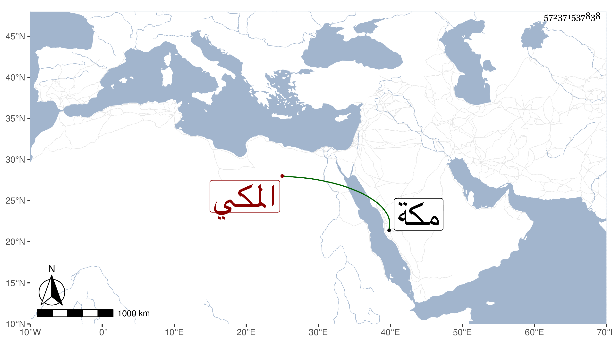

0902Sakhawi.DawLamic.ITO20230111-ara1.EIS1600.572371537838
Biography ID: 572371537838
130
عبد الله بن علي بن موسى العفيف بن النور المكي ويعرف بالمزرق كان يخدم كثيرا السيد حسن بن عجلان صاحب مكة ويقبض له الأموال من التجار فكان واسطة حسنة سيما ومخدومه يأتمنه ويحترمه كل ذلك لعقله وحسن عشرته حتى أنه يصحب المتباعدين ويراه كل منهما صديقا ومع ذلك لما حصل التنافر بين الأخوين بركات وإبراهيم ابني مخدومه ظهر منه ميل لثانيهما حتى كان ذلك سببا لقتل جماعة الآخر له في ليلة عاشر رجب سنة ست وعشرين في حوش صاحب مكة بالمسعى ودفن من الغد بالمعلاة وتأسف الناس عليه كثيرا وسنه أربعون أو نحوها وكان وجيها صاحب عقار ودنيا سامحه الله وإيانا .
